Izquierda: el prototipo aprobado (docs/design/profile-concepts-v1/prototipos.html). Derecha: las pantallas reales de Compose renderizadas con Robolectric (ProfileConceptsRenderSheetTest) a 412 dp de ancho. El emulador no aguantó el alta por falta de disco y RAM en el equipo; ver el README de esta carpeta.
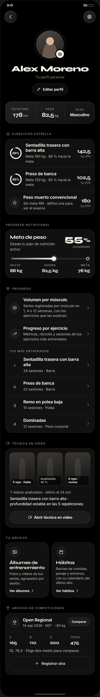
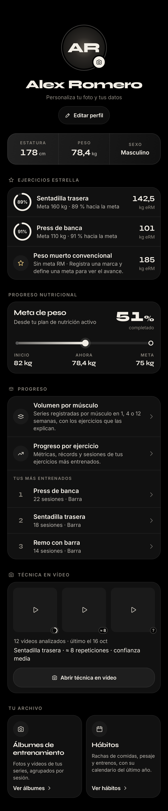
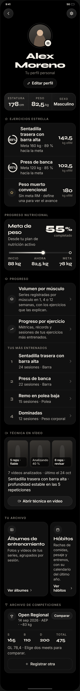
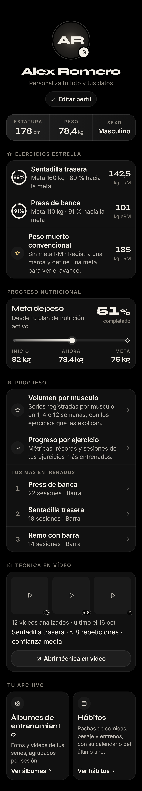
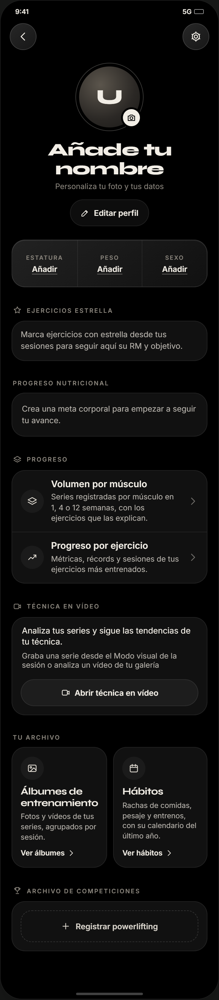
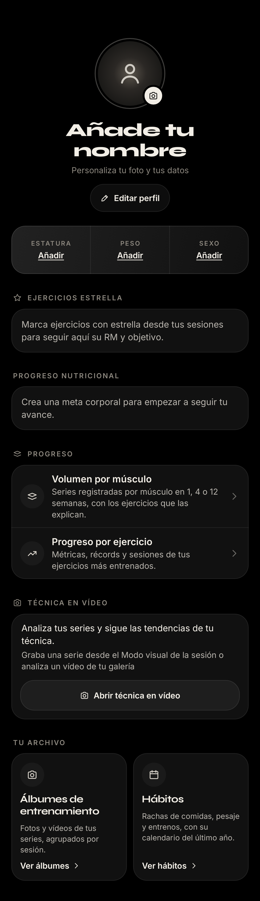
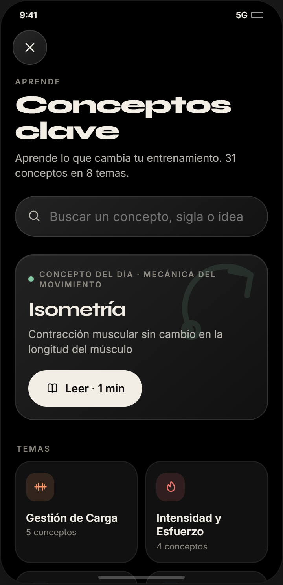
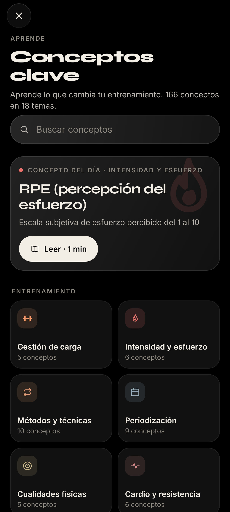
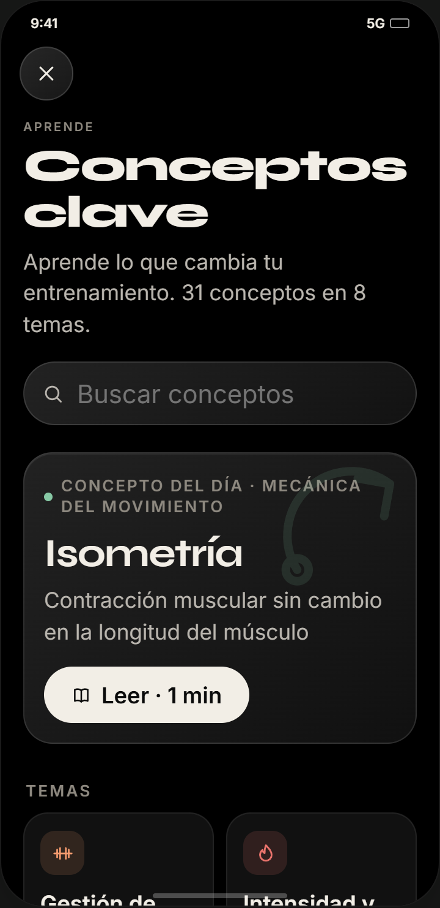
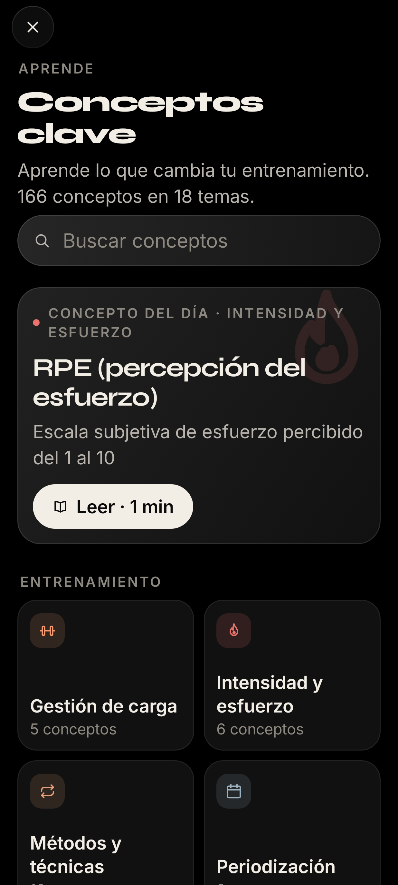
Estado nuevo por la escala de la enciclopedia: no estaba en el prototipo.
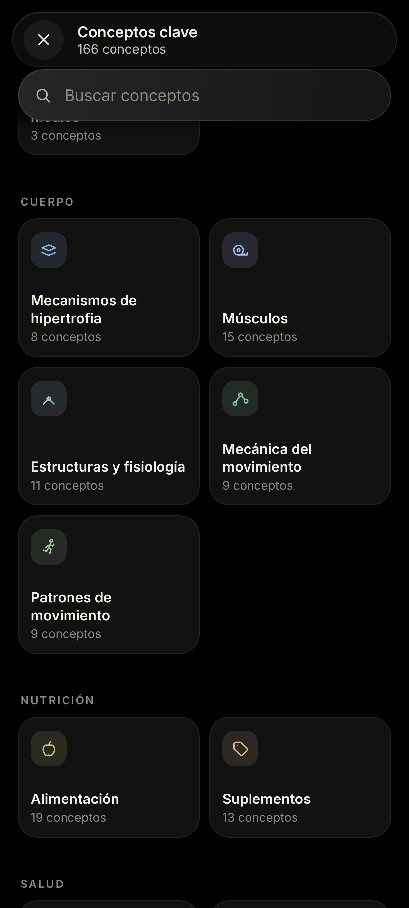
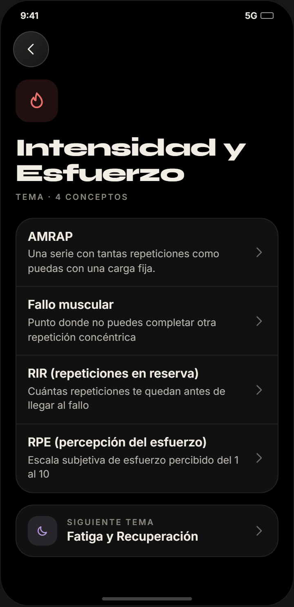
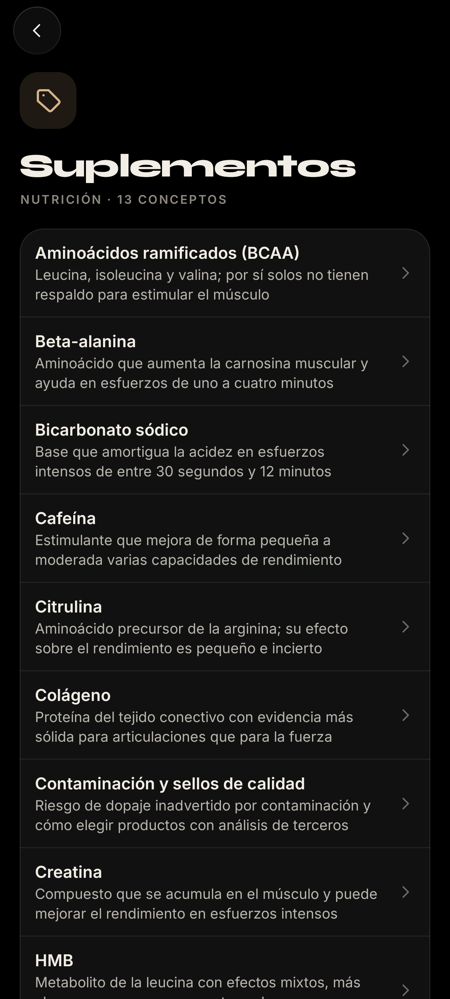
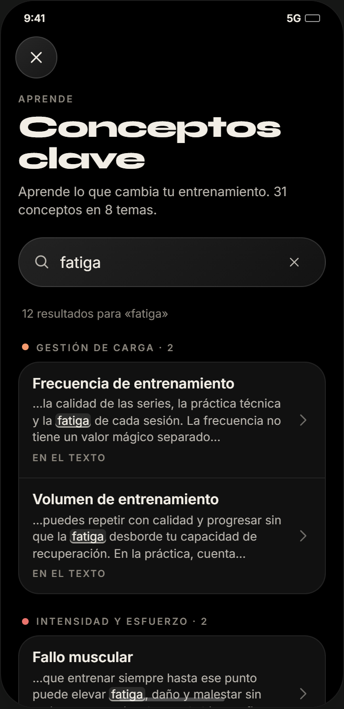
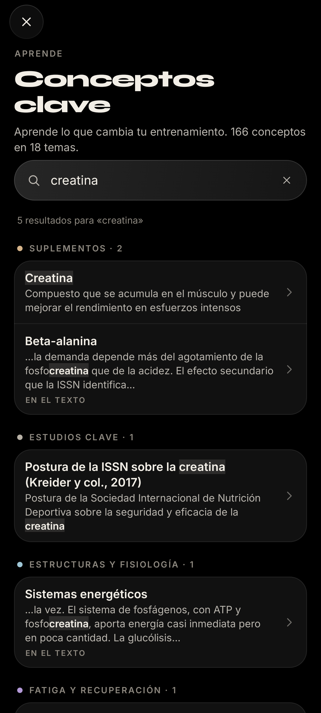
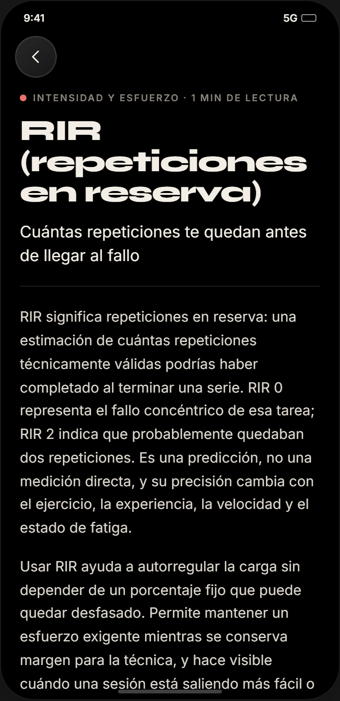
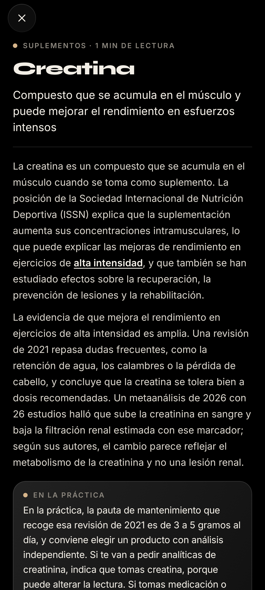
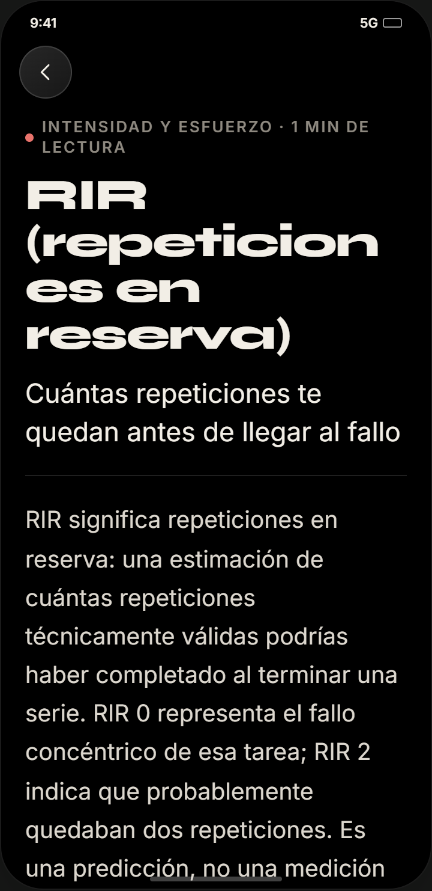
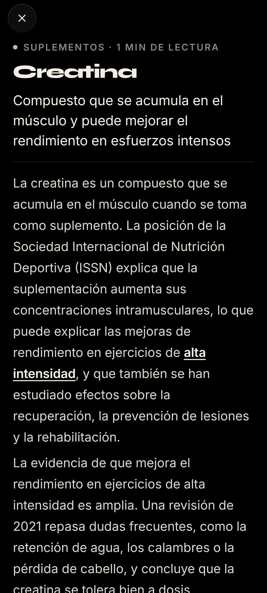
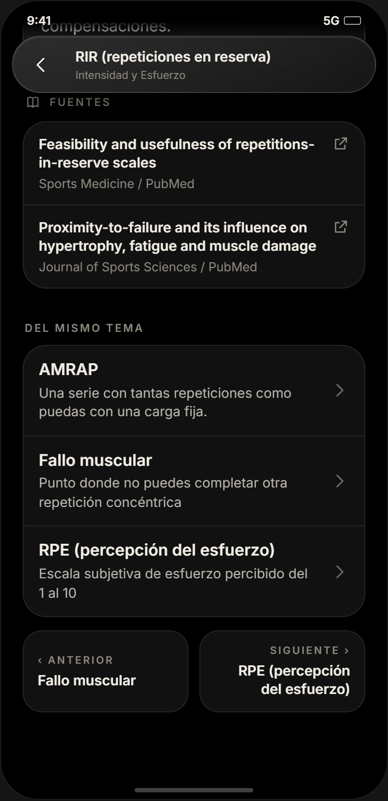
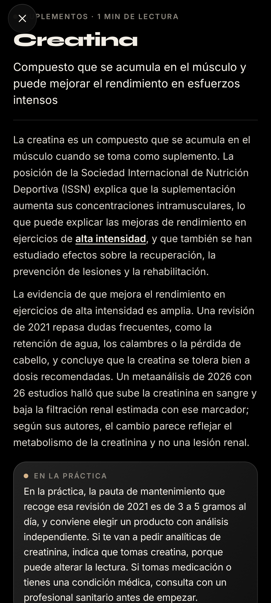
Estado nuevo por la escala de la enciclopedia: no estaba en el prototipo.
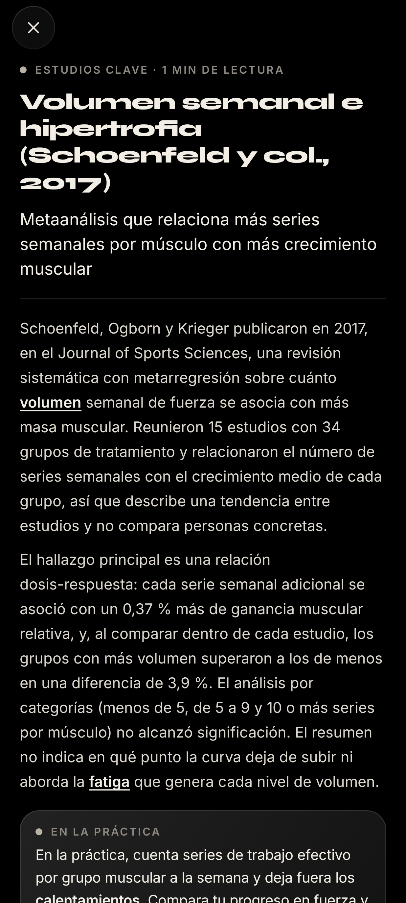